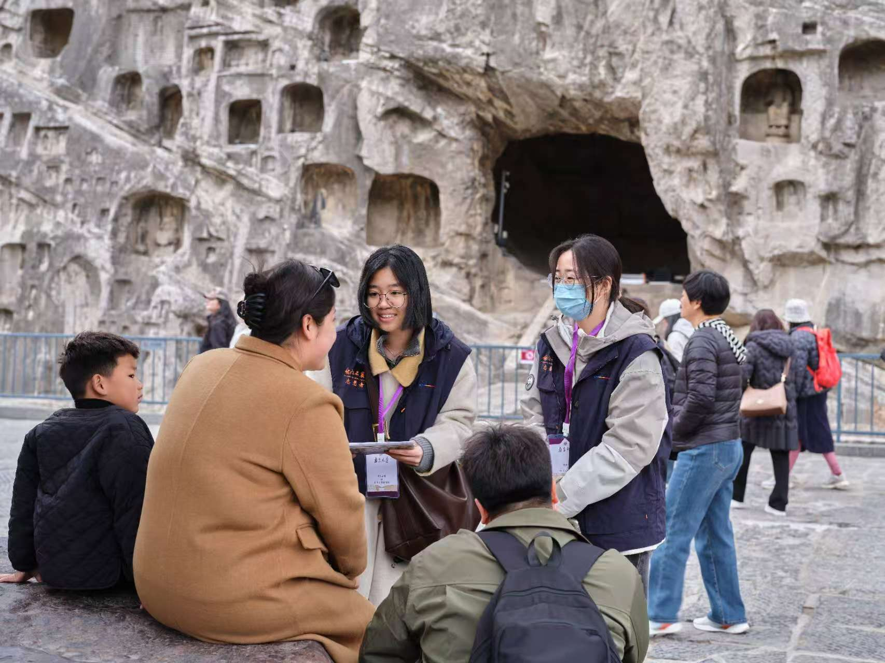
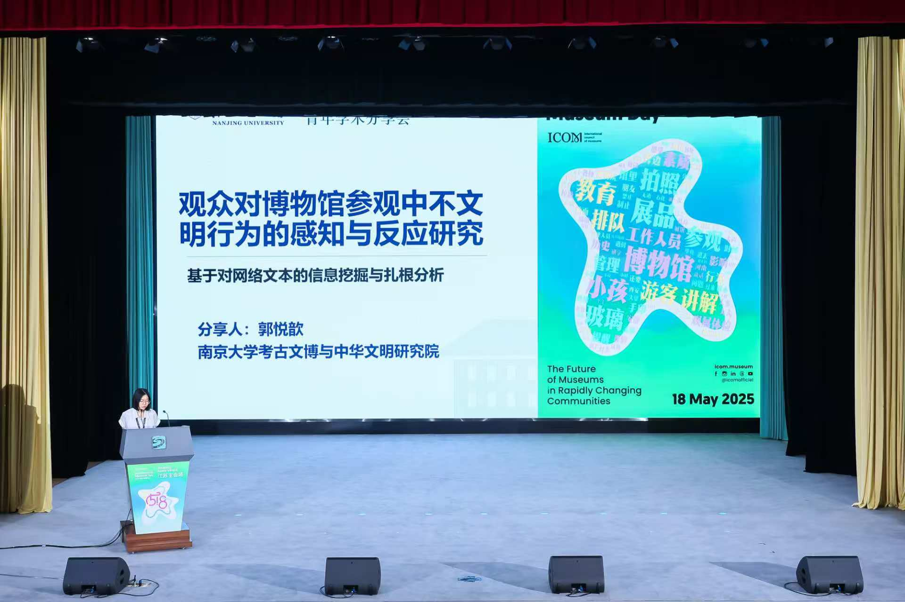
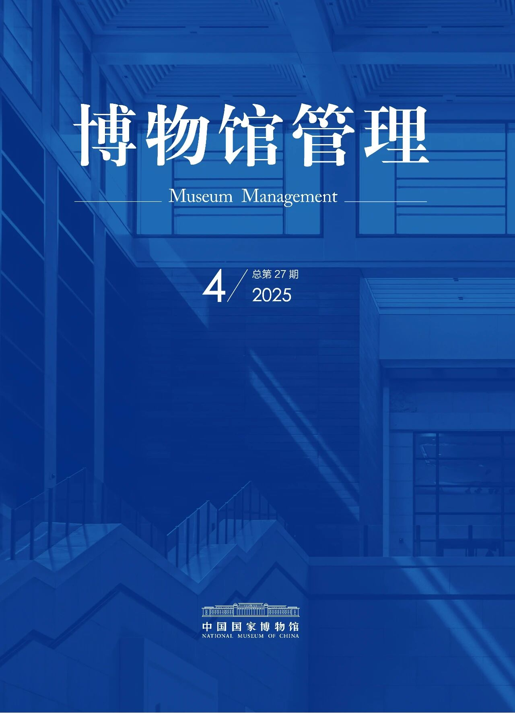
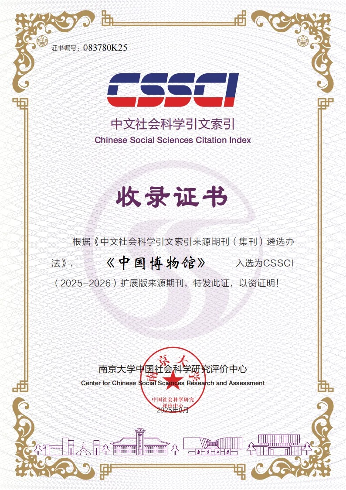

研究方向
博物馆观众研究
重点关注观众如何在数字媒介、兴趣圈层与展览空间之间建构意义，具体议题涵盖 不文明参观行为、兴趣导向型参观、文创消费动机与跨文化展览观众评估。
- 方法：UGC 文本分析、反思式主题分析、访谈、问卷与可视化
- 案例：辽宁省博物馆、河南省博物院、呼和浩特市老牛儿童探索馆等
- 成果：独作发表于《中国博物馆》，并完成兴趣圈层观众机制研究
博物馆修辞与叙事型展览
关注展览文本、空间叙事与修辞策略如何塑造公共认知和身份认同， 同时将理论研究延伸到策展实践、展签写作与展览世界观设定。
- 2025 年江苏省研究生实践创新计划项目立项
- 论文《从“叙事”到“修辞”》发表于《科学教育与博物馆》
- 参与成都博物馆“欧洲骑士盔甲和文化展”展览讲解词撰写、上海博物馆“世界树之巅：玛雅文明大展”文创开发与运营、“幻兽录”展览推介册撰写
作品集
《博物馆模拟器》网页游戏
独立完成网页游戏《博物馆模拟器》的创意策划与内容制作，负责主题设定、玩法包装、文本撰写及整体呈现；以“博物馆经营模拟”为核心，将文化内容与互动叙事进行游戏化转译。项目上线后两天内获得 1000+ 阅读、200+ 转发。
查看详情 ↗「钢铁与荣耀——欧洲骑士盔甲与文化展」讲解词
以“骑士的黄昏”为重点单元，围绕盔甲、长柄武器、火枪与佣兵制度的历史转折，组织面向观众的导览节奏、过渡词与展品解说语言。
查看详情 ↗「中美洲玛雅文明展」文创世界观设定
以世界树为核心结构，将美洲豹神、羽蛇神、雨神、玉米神等玛雅神灵转译为可持续扩展的角色系统，服务展览衍生文创叙事。
查看详情 ↗《探险家日报》幻兽录宣传册
以 1625 年奇幻报纸特刊为形式，整合异兽突袭、悬赏通缉、塞壬洞穴号外与探险启事，构建连续性的宣传阅读体验。
查看详情 ↗科研成果
《博物馆不文明参观行为的观众反馈研究》
基于社交媒体 UGC 与文本分析，讨论观众如何识别、命名并反馈博物馆参观中的 秩序问题，尝试为观众治理提供经验性依据。
《反向激活与身份实践：探析兴趣圈层下博物馆观众的参观机制》
以 1046 条小红书与微博文本为基础，提出“兴趣反向激活展品意义”的解释路径， 关注兴趣圈层观众的身份实践与去中心化解释网络。
《从“叙事”到“修辞”：评〈博物馆修辞学：国家空间中的公民认同构建〉及其方法论意义》
从方法论角度讨论叙事型展览研究如何转向修辞分析，思考展览话语、 空间结构与公共认同之间的关系。
《基于语义主题分析的凤冠冰箱贴文创产品消费动机研究》
围绕文创消费动机、用户生成内容与语义主题建模开展协作研究， 主要负责数据处理与语义分析。
获邀在 5·18 国际博物馆日江苏主会场、中国主会场青年论坛汇报研究。
2025 年江苏省研究生实践创新计划项目立项，持续推进叙事型展览修辞研究。
实践经历
-
2025.12 — 2026.04
北京坤远文博展览有限公司 · 策划/运营
参与博物馆文创开发、运营与展览策划。
-
2025.08 — 2025.12
中国博物馆协会 · 办公室实习生
参与第二届博物馆学大会筹备与现场执行，负责会议文案、 嘉宾协调及会务支持；同时参与第七届理事会换届相关执行工作。
-
2025
中国主会场青年论坛发言
在 5·18 国际博物馆日中国主会场青年论坛汇报研究， 相关活动获媒体报道，并接受 CGTN 专访。
-
2024.04 — 2024.06
安徽省文物考古研究所 · 考古发掘实习
参与考古发掘与现场记录工作，在田野环境中理解文物材料、 现场沟通与公众解释的关系。
观众评估与研究项目
- “拍古问今”：生成式三维建模文物动态交互系统，负责内容文本转译
- 辽宁省博物馆文创吸引力评估，完成 30+ 份有效深访记录
- 河南省博物院墨西哥玛雅文明大展观众评估，参与问卷与访谈设计
- 中国科技馆石窟寺主题课题展览评估，支持展览反馈整理
策展与展览写作
- 坤远文博实习，参与盔甲展览项目与展示文本工作
- 参与上博玛雅展览策展协作与世界观设定撰写
- 关注展览叙事、空间语言与观众进入方式之间的匹配




联系与教育背景
欢迎交流
如果你也在关注博物馆观众研究、展览修辞、展签写作或策展协作， 欢迎通过邮箱联系我。
南京大学 · 历史学硕士（博物馆）
2024.09 — 2027.06 · GPA 前 5% · 国家奖学金 / 学业奖学金一等奖
淮北师范大学 · 历史学学士（文化遗产）
2020.09 — 2024.06 · GPA 前 5% · 安徽省优秀毕业生 / 优秀奖学金一等
研究方法与工具
- 文本与质性分析：UGC、扎根式编码、反思式主题分析
- 定量与辅助工具：Python、SPSS、MySQL、NVivo
- 办公与协作：Excel、Word、codex CLI、Claude code CLI、vscode
- 语言：CET-4 495 / CET-6 501